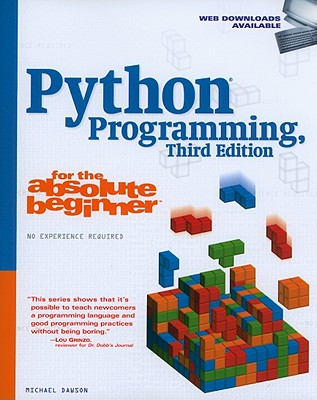

Learning to Program
with Python
Juan Musleh
@juanmusleh

Juan Musleh
@juanmusleh
Python is a programming language.
What's a programming language?
Why do we need one?
If humans and computers could speak the same language, we wouldn't need a programming language
A programming language is a language that is designed to communicate instructions to a computer.
It's a language that's relatively easy for humans to learn and for computers to understand.
Your computer can only do what you tell it to if you give it exact instructions.
A program is made up of a set of instructions and each instruction performs a very specific task
Suppose you had to teach a kid how to cross a road
1. Stand on the pavement.
2. If traffic is coming, let it pass.
3. When it's safe, walk accross the road.
We left out some parts of the process, but a person could figure out:
What is a pavement? How to get there?
What is traffic?
How do you walk across the road?
When do you stop walking?
etc, etc, etc (there are many little steps)
This same recipe for a computer would be much, much longer.
What is a pavement?
Where on the pavement to stand?
What if there is no pavement?
Stand facing which way?
How to stand?
etc, etc, etc
What is traffic?
What if there is no traffic?
What if it's a one way street?
What if it's a two way street?
What if there's a cop and traffic lights?
etc, etc, etc
Programming is writing out specific instructions for a computer using a programming language (like Python).
Easy to use: It is closer to human language than to machine language.
Powerful: It's used in academic research, at Google and YouTube.
Runs Everywhere: It's platform indepenent. You can write your program on a Mac and run it on Windows.
Free and Open Source.
Great Community.
We need to tell our computer that we're going to "speak python"
Let's go into the python interpreter
OS X
Applications -> Utilities -> Terminal
Windows (C:\windows\system32\cmd.exe)
Start -> All Programs -> Accessories -> Command Prompt
python
>>>
Let's ask Python to do something.
>>> 1 + 1
2
>>> 2 - 3
-1
>>> 297 - 5 * 25 - 130
>>> 42
Python can do math, and it can do it much quicker than a person can.
>>> 1 + 2 + 3
6
"Good" + " morning"
"Good morning"
Python knows the difference between a number and a word.
In Python ...
Numbers without decimals are called INTEGERS. We just did some math with some integers.
1 is an Integer. 1.0 is NOT an integer
>>> type(1)
<type 'int'>
>>> type(1.0)
<type 'float'>
In Python ...
Letters, words, and sentences are called STRINGS. We tell Python that we are intending to use a string by wrapping it in quotes.
>>> type("What's up?")
<type 'str'>
Think of a string of characters.
Python is extremely picky and needs to classify everything before it knows what to do with it.
Python knows that ...
The number 1 is an Integer.
The word "girls" is a String.
Integers and Strings are Types in Python.
>>>1+1
2
>>>"1"+"1"
"11"
>>>"1"+2
Traceback (most recent call last): File "", line 1, in TypeError: unsupported operand type(s) for +: 'int' and 'str'
Some programming words that we have learned so far:
Integer.
String.
Type.
Integers and Strings are Types
Python has pages and pages of instructions for what to do with different types of objects.
When you ask Python what 1 + 2 is:
It knows that 1 is an INTEGER.
It knows that 2 is an INTEGER.
It finds the instruction sheet for INTEGER.
Scans the instruction sheet for +.
Understands that when you ask for an INTEGER + INTEGER, you want it to add the two together.
Python knows what to do with objects depending on their types
Each type has its own set of instructions
This will save you time writing detailed instructions to Python.
You don't have to explain to Python how to add two numbers, it already knows.
You just have to tell it to add two numbers.
Each one is an instance of the type String.
>>> "laura".capitalize()
"Laura"
>>>"Hello you".replace("you", "Sam")
'Hello Sam'
>>>"No More CAPS".lower()"
'no more caps'
>>>"There are " + "30 " + "days in April"
'There are 30 days in April'
>>>"Today is a " + "Saturday"
'Today is a Saturday'
>>> "There are " + "7 " + "days in a week and " + "30 " + \ ... "days in April"
'There are 7 days in a week and 30 days in April'
>>>abs(-99)
99
>>>pow(2,3)
8
>>>5 % 2
1
abs and pow are builtin functions that you can use with integers
capitalize and replace are string functions
Functions are actions.
Types come with builtin functions.
If you ask Python to do something that it doesn't know how to do, it will give you an error.
Get in the habit of reading the error messages, they will give you a clue on what went wrong.
>>> pow("Lady", "Gaga")
Traceback (most recent call last):
File "
TypeError: unsupported operand type(s) for ** or pow():
'str' and 'str'
Booleans are a special type. There are only two booleans:
True
False
Booleans are used extensively in programming, we will see examples in upcoming slides.
"Laziness... The first great virtue of a programmer." -- Larry Wall
What if we could type in "girlslearningcode" just once, and store it for later use? We can!
>>> glc = "girlslearningcode"
>>> glc
"girlslearningcode"
We've just created a variable glc and gave it the value "girlslearningcode".
A variable is called just that because its value can change
Now let's ask for the value of party_budget.>>>party_budget = 1000
party_budget
 1000
1000>>> party_budget
1000
Changing a variable's value
>>>party_budget = 1500
Let's ask for the value of party_budget once again.
>>>party_budget
1500
Let's introduce another variable.
>>>team_building_budget = party_budget
1500
Let's ask for the value of each variable.
>>>party_budget
1500
>>>team_building_budget
1500
Now set party_budget back to 1000 :(
>>>party_budget = 1000
Let's ask for the value of each variable again.
>>>party_budget
1000
>>>team_building_budget
1500
When you assign a value of type INTEGER to a variable, you can use the variable the same way you would use an INTEGER
>>>party_budget * 1000
1000000
When you assign a value of type INTEGER to a variable, you can use the variable the same way you would use an INTEGER
>>>party_budget
1000
What? That's it?! I thought we had 1000000 to spend? What happenend?
You have asked your computer to multiply party_budget by 1000, but you never told it that the result will be the new party_budget.
>>>party_budget = party_budget * 1000
>>>party_budget
1000000
>>>glc = "girlslearningcode"
You can now use this variable exactly like you would have used strings such as "girlslearningcode" before.
>>> glc.capitalize()
"Girlslearningcode"
>>> "I'm having so much fun at " + glc
"I'm having so much fun at girlslearningcode"
What's the value of glc?
>>>glc
"girlslearningcode"
glc is still pointing to "girlslearningcode". You didn't tell it to point to a different string.
If you want the value to change, you have to set it to something else.
>>> glc = glc.upper()
"GIRLSLEARNINGCODE"
>>> glc
"GIRLSLEARNINGCODE"
If you want the value of a variable to change, you have to explicitly tell it to change.
>>>"There are " + "30 " + "days in April"
>>>days = 30 >>>"There are %d days in April" % days
'There are 30 days in April'
>>>"Today is a " + "Saturday"
>>>day = "Saturday" >>>"Today is a %s" % day
'Today is a Saturday'
>>>weekdays = 7 >>>months = 12 >>>"There are %d days in a week and %d months in a year" % (weekdays, months)
'There are 12 days in a week and 12 months in a year'
Integer
String
Boolean
Variable
Type
Function
Write a program only once and run it forever.
You can write your instructions to a file, save it, then tell python to run the instructions in the file.
python first_program.py
Open any text editor, add this code and save it as party.py
party_budget = 1000
party_budget
To run your program, go to the directory where you saved your file and type:
python party.py
Nothing happens? I don't see the party budget?!
When you type a variable name in the interpreter, Python knows you want to see the variable's value.
When you run a program from a saved file, if you want to see a variable's value you need to be explicit.
party_budget = 1000
print party_budget
print means output to screen
(example in code/party.py)
(example in code/cat.py)
print "CSI Annex"
print "720 Bathurst Street"
print "Toronto, Ontario"
print "CSI Annex \n720 Bathurst Street \nToronto, Ontario"
Try these other special characters:
\'
\"
\\
\t
\n
Your program is "thinking" about a number and you need to guess what that number is.
Make your computer "think" of a number (the secret number)
Ask the player for input (their guess)
Compare the guess to the secret number
Let the player know if they guessed right
How do we do this?
There's a function that you can use to get input from a user
>>>import random
>>>secret_number = random.randint(1,20)
There's a function that you can use to get input from a user
>>>raw_input("What's your name?\n")
>>>name = raw_input("What's your name?\n")
>>>age = raw_input("How old are you?\n")
User input is always returned as a string
Working with your group, write a progam that looks like this:
What is the secret number
2
You guessed 2
(answers in assignments/guess_my_number_1.py)
| Operator | True | False |
| == | 99 == 99 | 99 == 100 |
| != | 99 != 100 | 99 != 99 |
| > | 100 > 99 | 99 > 100 |
| < | 99 < 100 | 100 < 99 |
| >= | 99 >= 99 | 99 >= 100 |
| <= | 99 <= 99 | 100 <= 99 |
If the player guesses the right number they win
If the player guesses the wrong number they lose
How do we tell the program to do something different in each case?
if True:
print "Good choice!"
else:
print "This program will always ignore me :("
Indentation Matters
if today == "Saturday":
print "You can sleep in, but you're better off going to GLC"
elif today == "Sunday":
print "Fine, sleep in"
else:
print "You're late for work again!"
Try running this with different values of today.
(example in code/weekdays.py)
What is the secret number?
2
You guessed 2
You lose
(answers in assignments/guess_my_number_2.py)
raw_input
if .. else
if .. elif .. else
You need to keep asking them to guess until they get it right
some_condition = True
while some_condition:
print "Are we there yet?"
This program will run as long as some_condition is True
Please make it STOP
Meet Ctrl-C
some_condition = True
while some_condition:
print "Are we there yet?"
some_condition = False
hungry = "yes"
while hungry == "yes":
print "Eat"
hungry = raw_input("Are you hungry?\n")
print "No more eating"
Another way to say the same thing
while True:
print "Eat"
hungry = raw_input("Are you hungry?\n")
if hungry != "yes":
print "No more eating"
break
(example in code/hungry.py and code/hungry2.py)
Now you know everything you need to build this game!
I am thinking of a number between 1 and 20. Take a guess: 1 Your guess is too low. Take a guess: 2 Your guess is too low. Take a guess: 20 Your guess is too high. Take a guess: 10 Your guess is too low. Take a guess: 15 Good job! You guessed my number in 5 guesses!
(answers in assignments/random_game.py)
print "Counting to 10"
for i in range(0,11):
print i
What's range?
Why start at 0?
Why end at 11?
secret = "secretcode"
print "You get 3 chances to get this right"
for i in range(0,3):
password = raw_input("Please enter your password: ")
if password == secret:
print "You're in!"
break
if password != secret:
print "Sorry you've lost your chance, it's too late now"
(example in code/secret_word.py)
Anything that you can do with a while loop you can do with a for loop
print "Counting to 10"
for i in range(0,11):
print i
print "Counting to 10"
x = 0
while x < 11:
print x
x = x + 1
>>>[1, 2, 3, 4, 5] >>>numbers = [1, 2, 3, 4, 5]
>>>numbers
[1, 2, 3, 4, 5]
>>>friends = ['Rachel', 'Ross', 'Monica', 'Phoebe', ...'Joey', 'Chandler']
>>>friends
['Rachel', 'Ross', 'Monica', 'Phoebe', 'Joey', 'Chandler']
>>>friends[0]
'Rachel'
>>>friends[1]
'Ross'
>>>friends[10]
Traceback (most recent call last): File "", line 1, in IndexError: list index out of range
>>>len(friends) 6
>>>for friend in friends: ... print friend
Rachel Ross Monica Phoebe Joey Chandler
Write a program that prints all the days of the week
(answers in assignments/print_weedays.py)
We can add items to a list, remove items from a list and even combine lists together
>>>woody_allen_movies = ["Vicky Cristina Barcelona", ... "Whatever Works"] >>>new_movie = "Midnight in Paris" >>>woody_allen_movies.append(new_movie) >>>woody_allen_movies
append adds an item to the end of the list.
We can add items to a list, remove items from a list and even combine lists together
>>>woody_allen_movies = ["Vicky Cristina Barcelona", ... "Whatever Works"] >>>new_movie = "Midnight in Paris" >>>woody_allen_movies.append(new_movie) >>>woody_allen_movies.append(new_movie) >>>woody_allen_movies.remove(new_movie)
>>> woody_allen_movies.remove("inception")
Traceback (most recent call last):
File "
remove(x) removes the first item from the list whose value is x. It is an error if there is no such item.
while
for
break
list
Let's make a hangman game using what we learnt today.
But before you start coding away, it helps to think about what you're trying to do.
Remember, computers need specific instructions, so you need to break it down.
You can start by playing hangman on paper with each other.
(answers in assignments/hangman.py)
Inspired by Python Programming for the absolute beginner

Big, big thank you to
Freshbooks,
to Girls Learning Code
and to all the mentors!